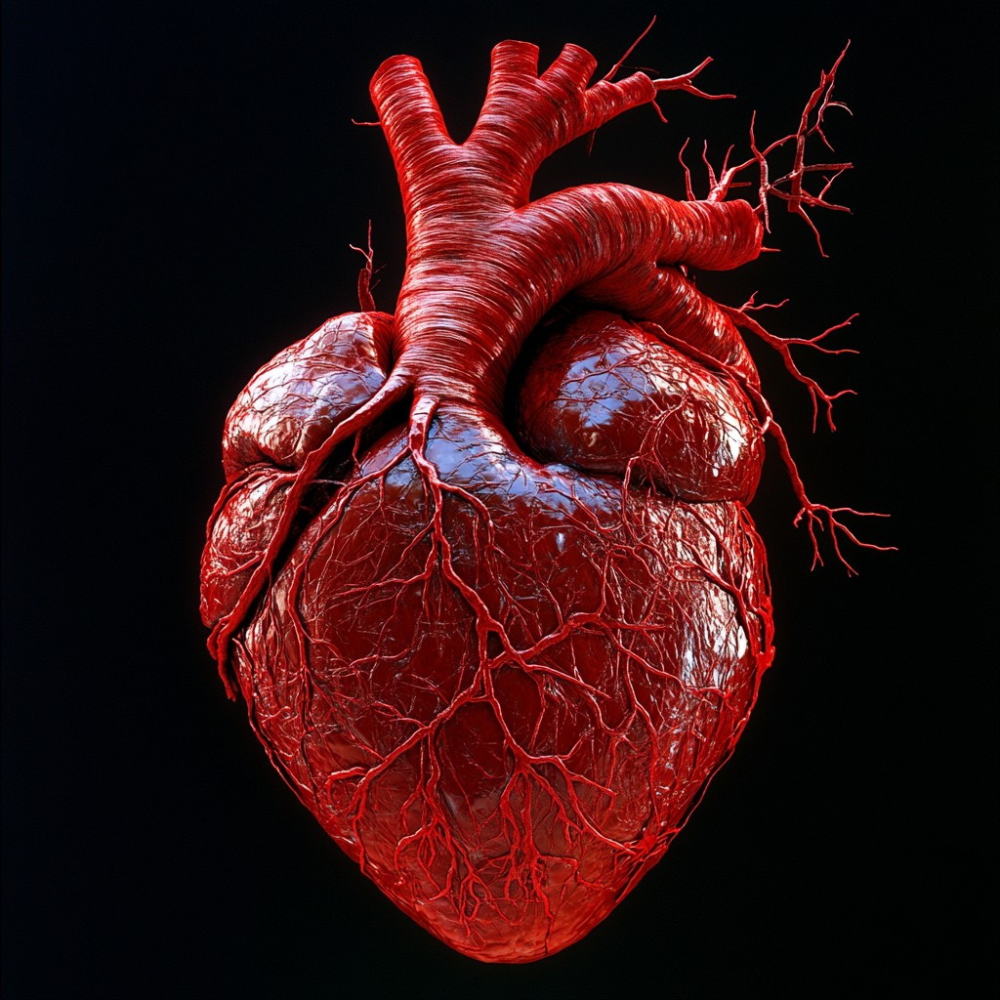

Left Atrium: After the lungs fill our blood with oxygen, the pulmonary veins carry the blood to the left atrium. This upper chamber pumps the blood to the left ventricle.
Right Atrium: Two large veins deliver oxygen-poor blood to the right atrium. The superior vena cava carries blood from the upper body. The inferior vena cava brings blood from the lower body. Then the right atrium pumps the blood to your right ventricle.
Left Ventricle: The left ventricle is slightly larger than the right. It pumps oxygen-rich blood to the rest of your body.
Right Ventricle: The lower right chamber pumps the oxygen-poor blood to lungs through the pulmonary artery. The lungs reload the blood with oxygen.
Inferior Vena Cava: The inferior vena cava brings blood from your lower body
Superior Vena Cava: The superior vena cava carries blood from your upper body.
Aorta: Main vessel through which oxygen-rich blood travels from the heart to the rest of the body. It also delivers nutrients and hormones.
Pulmonary Valve: Helps manage blood flow in heart controls.